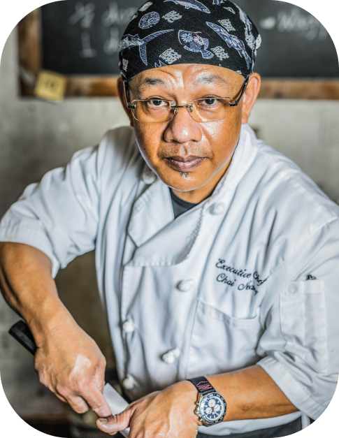
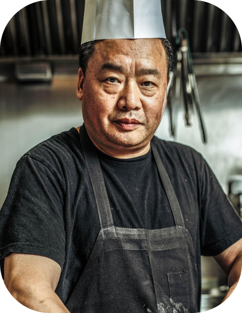
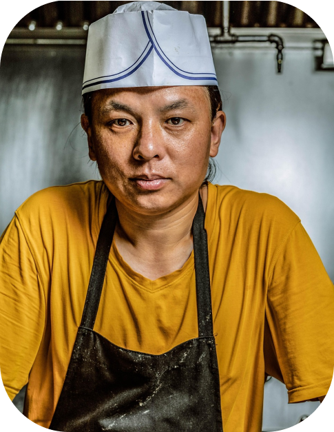

Know our team
At Shoku, we believe that excellence is born from the union of
technique, sensitivity, and respect for Japanese tradition.
Every member of our team is a guardian of a culinary heritage
that demands precision, serenity, and a deep commitment to
the art of cooking.
Here, where every detail matters, we work with a single
intention: to offer an experience that honors Japan in
every gesture and every bite.
At Shoku, each member of our team contributes their talent,
discipline, and devotion to Japanese culture. Together, we
create a space where tradition becomes experience and where
every detail is cared for with honor.
We are Shoku. A harmony of technique, spirit, and flavor.
Head Itamae
Husband of fundator
Alexander
Was captivated by Japanese culture and cuisine from a
young age. Fascinated by the elegance, precision, and
harmony found in every Japanese meal, he dedicated
himself to studying the culinary arts with unwavering
focus.
His journey took him to Japan, where he trained under
revered itamae masters, learning not only the technical
skills of sushi-making but also the philosophy that
guides every dish: respect for ingredients, mindfulness
in preparation, and the pursuit of perfection.
Today, his passion and lifelong dedication shape every
plate at Shoku, ensuring that each creation carries the
authenticity, artistry, and cultural essence he has
cherished since childhood.
He firmly believes that the purity of flavor is born
from the perfect balance between precision and calm.
Masters specialists
Meat & Wagyu Master
Hiroshi
Specialist in Japanese meat-cooking techniques and the
handling of premium wagyu. He masters the perfect balance
of temperature, cut, and timing to reveal the silky texture
and deep flavor characteristic of this exceptional beef.
His philosophy is rooted in absolute respect for the product
and in the pursuit of the precise moment when the meat becomes
a unique sensory experience.
Master of Hot Cuisine
Takumi
Expert in traditional hot dishes and ancestral techniques. He approaches every preparation with a deep understanding of balance and seasonality, allowing each ingredient to express its natural character.
His mastery of heat control and traditional methods transforms simple elements into dishes that feel both timeless and alive, honoring the foundations of Japanese cuisine while elevating them with quiet sophistication.
Beverage Curator
& Maître
Akira
Guardian of omotenashi, the Japanese art of hospitality. His role is to create a space where every guest feels honored, welcomed, and attended to with the delicacy that defines Shoku. With each service, he seeks to convey serenity, fluidity, and an attentive yet silent presence.
Also the responsible for selecting and harmonizing an exclusive collection of sake, Japanese whiskies, and premium beverages. His philosophy is based on creating pairings that enhance the essence of each dish and reveal new layers of flavor.
Tempura Specialist
& Sushi Sous-Chef

Ren
With a silent and delicate technique, he creates light, crisp, and perfectly balanced tempura following the classic standards of Japanese gastronomy.
He’s also a specialist in traditional knife work and in crafting nigiri and sashimi with a minimalist approach. His mastery of technique and dedication to precision elevate the sushi bar to a ceremonial level.
Tools of the Masters
At Shoku, every tool is chosen with intention, reflecting the precision, care, and quiet beauty of Japanese craftsmanship. Each instrument in our kitchen is an extension of the chef’s hand, allowing every gesture to honor the ingredient and the tradition behind it. Our hand-forged knives—yanagiba, deba, and usuba—are sharpened daily on natural whetstones, ensuring that every cut is deliberate, precise, and respectful of the delicate flavors they reveal.
In the hot kitchen, the robata—fueled by traditional charcoal—brings depth, subtle smokiness, and a gentle complexity to each preparation. Its flames demand patience and intuition, transforming wagyu, seafood, and seasonal vegetables into dishes that balance texture, aroma, and essence.
For tempura, the combination of delicate oils, precise temperature control, and specialized utensils allows each piece to achieve perfect lightness and crispness
Even the smallest tools—bamboo brushes, sieves, and lacquered trays—play a vital role in maintaining purity, balance, and elegance. They are silent companions that guide the hands of our chefs, enabling the creation of dishes that are as refined as they are authentic.
At Shoku, tools are never merely instruments; they are partners in the pursuit of mastery, embodying the discipline, harmony, and dedication that define our culinary philosophy. Every movement is measured, every batter applied with care, honoring centuries of culinary mastery.
Each one tells a story, reflecting the connection between craft, culture, and the art of Japanese cuisine.

Teamwork
At Shoku, our team moves with the synchronicity of a well-practiced ritual, each member contributing their own mastery while honoring the rhythm of the whole. From the kitchen to the dining room, every gesture is born from mutual respect, attentive listening, and the conviction that excellence can only flourish when effort is shared. This harmony is reflected in every detail: in the precision of each cut, the softness of the service, and the attentive gaze that anticipates every need.
United by a shared devotion to Japanese tradition, our chefs, hosts, and servers work like a family that understands that culinary art is not the creation of a single hand, but the result of many wills supporting one another. At Shoku, teamwork is more than an internal dynamic: it is the spirit that brings the experience to life— the invisible thread that guides each dish and every interaction toward serene perfection.